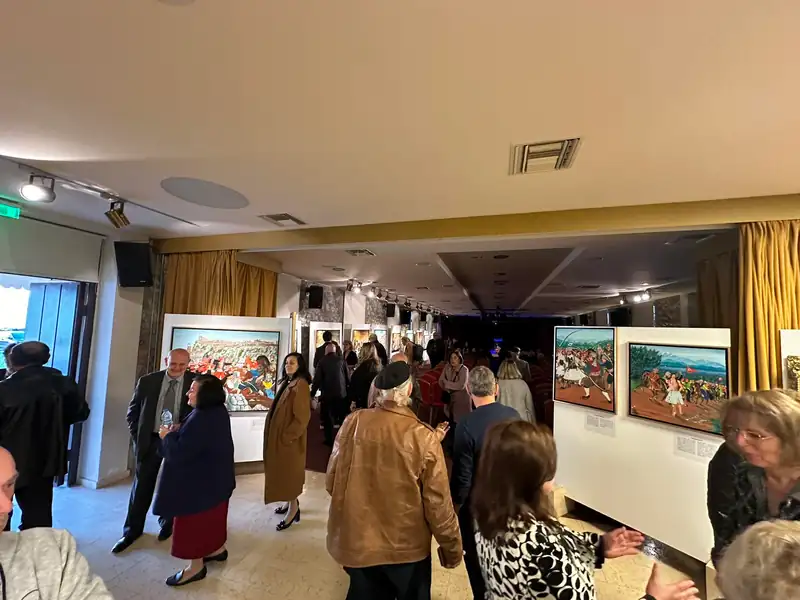
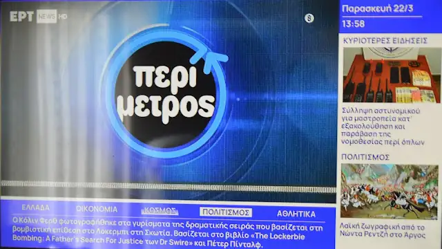
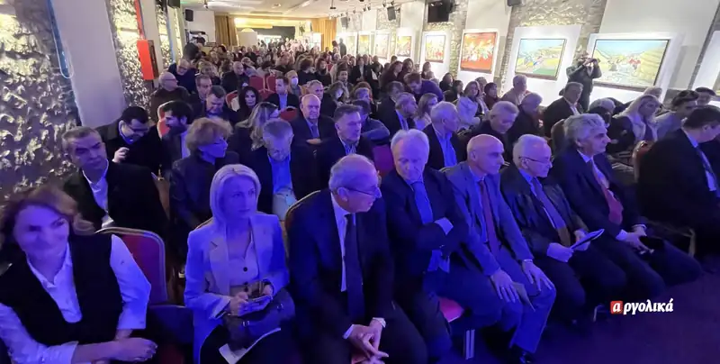
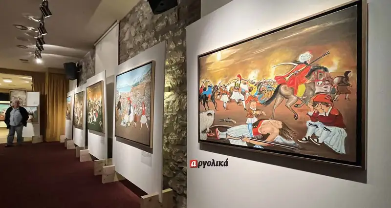
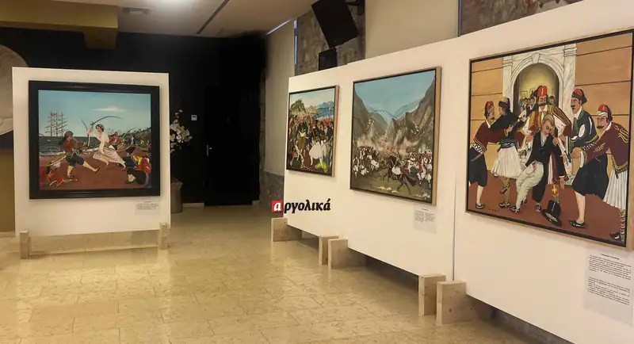
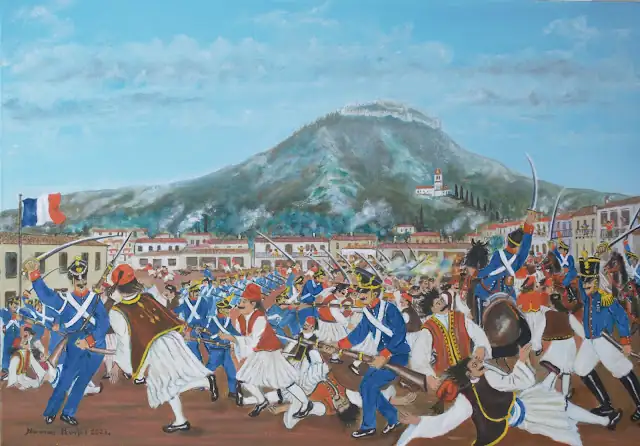

ΕΚΘΕΣΗ: Η ΣΦΑΓΗ ΤΟΥ ΑΡΓΟΥΣ (4 ΙΑΝΟΥΑΡΙΟΥ 1833)
Στην κατάμεστη αίθουσα “Μ. Αλέξανδρος” στο Άργος έγιναν το βράδυ του Σαββάτου τα εγκαίνια της έκθεσης του λαϊκού ζωγράφου Νώντα Ρεντζή η οποία περιλαμβάνει 27 πίνακες με θέμα την Εθνική Παλιγγενεσία.
Στα εγκαίνια έγιναν και τα αποκαλυπτήρια του έργου του Νώντα Ρεντζή για τη σφαγή του Άργους από τους Γάλλους στις 4 Ιανουαρίου 1833.


Πρόκειται για το πρώτο έργο που φιλοτεχνήθηκε με το θέμα αυτό και έγινε έπειτα από παρότρυνση του φίλου τού ζωγράφου, του Αργείου Γιώργου Γιαννούση.
Ο πίνακας δωρήθηκε από τον δημιουργό στον Δήμο Άργους-Μυκηνών και ο δήμαρχος Γιάννης Μαλτέζος αφού τον ευχαρίστησε, έδωσε τη διαβεβαίωση πως πάντα θα βρίσκεται σε περίοπτη θέση σε χώρους του Δήμου.

Την έκθεση διοργανώνει ο Δήμος Άργους-Μυκηνών σε συνεργασία με την “Αργολική Αρχειακή Βιβλιοθήκη Τέχνης και Πολιτισμού”.
Για τα έργα του Νώντα Ρεντζή μίλησαν στην εκδήλωση εκτός από τον δήμαρχο Άργους-Μυκηνών Γιάννη Μαλτέζο, ο δήμαρχος Θέρμου Αιτωλοακαρνανίας (τόπου καταγωγής του καλλιτέχνη) Σπύρος Κωνσταντάρας, ο αντιδήμαρχος Ηλιούπολης (τόπου διαμονής του) Χρήστος Καλλαρύτης, και ο αντιδήμαρχος σύγχρονου Πολιτισμού Άργους-Μυκηνών Παναγιώτης Μπουλούκος.

Ο κ. Μπουλούκος τόνισε πως η συγκεκριμένη έκθεση δείχνει τη φιλοσοφία που θα κινηθεί στα πολιτιστικά η νέα δημοτική αρχή: Εκφράζοντας το λαϊκό αίσθημα για το απλό και το ωραίο.
Ο πρόεδρος του Προοδευτικού Συλλόγου Ναυπλίου “Ο Παλαμήδης” Θεοδόσης Σπαντιδέας διάβασε ένα ποίημά του για τον λαϊκό ζωγράφο Ν. Ρεντζή ο οποίος έχει από πολλούς χαρακτηριστεί ως “σύγχρονος Θεόφιλος”.
Ο πρόεδρος της Αργολικής Αρχειακής Βιβλιοθήκης Γιώργος Γιαννούσης μίλησε για το έργο του καλλιτέχνη, ενώ η Αρετή Καρκαγγέλη διάβασε το ιστορικό της σφαγής.
Με την παρουσία τους, μας τίμησαν οι Βουλευτές Αργολίδας Γιάννης Ανδριανός και Γιώργος Γαβρήλος. Ο Δήμαρχος Θέρμου Σπύρος Κωνσταντάρας, ο Αντιδήμαρχος Ηλιούπολης Χρήστος Καλαρρύτης, ο Πρόεδρος της Εθνικής Πινακοθήκης Απόστολος Μπότσος, ο Διευθυντής της Δευτεροβάθμιας Εκπαίδευσης Αργολίδας Βασίλειος Πολύδωρος και πλήθος Αργείων και Ηλιουπολιτών.


Πνοής άρωμα (Στον Νώντα Ρεντζή)
που μεταλλάσσονται
σε γραμμές ασήμαντες
οι λέξεις
που καμπυλώνουν τον χώρο
με χρώματα του λευκού
οι λέξεις
που σφυρηλατούν
το αμόνι του χρόνου
οι λέξεις
που ορίζει
η εικασία της τέχνης
τώρα
βάφεις
την εικόνα της σφαγής
με το αίμα
του θανατερού κόκκινου
και του γαλάζιου
της αθανασίας
οργώνοντας
την ανάμνηση
και την ελπίδα
πάνω σε απλοϊκές
-μα ποτέ απλές-
ράγες φωτός
καλλιτέχνη
ποίησης της δημιουργίας
συνέχισε
να ζωγραφίζεις το έργο
της αέναης διαδρομής
πάνω στο άρωμα
σκιών
που μένουν ζώσες
«Η ΣΦΑΓΗ ΤΟΥ ΑΡΓΟΥΣ ΑΠΟ ΤΟΥΣ ΓΑΛΛΟΥΣ»

Στις 4 Ιανουαρίου του 1833, λίγες μέρες προτού έρθει ο Όθωνας στη χώρα μας, Γάλλοι στρατιώτες, με επικεφαλής τον Συντ/χη Στοφέλ, διέπραξαν μια μοναδικής αγριότητας σφαγή στην πόλη του Άργους. Περισσότεροι από 250 πολίτες σκοτώνονται μέσα σε 4 ώρες.
Τα ΑΙΤΙΑ της τραγωδίας αυτής, πρέπει να αναζητηθούν στις δράσεις των αλληλοσπαρασσόμενων πολιτικών κομμάτων (φατριών) μετά τη δολοφονία του Καποδίστρια, που είχαν μετατρέψει την Πελοπόννησο σε πεδίο εμφύλιων συγκρούσεων. Κυριαρχούσε, με τη βοήθεια του γαλλικού στρατού, το Γαλλικό κόμμα του Κωλέττη, το οποίο εμφάνιζε τον Θ. Κολοκοτρώνη και τους οπλαρχηγούς συντρόφους του, ως στασιαστές, επικίνδυνους για τον αναμενόμενο νεαρό βασιλιά και την αντιβασιλεία.
Ο Κωλέττης έπεισε τους Γάλλους ότι το Άργος ήταν το άντρο των συνομοτών κι ότι «..εξύφαινον συνομοσίαν κατά του γαλλικού στρατού εν Άργει...» [1]. Έτσι έστειλαν στο Άργος 750 Γάλλους στρατιώτες (4 λόχοι) και επί πλέον 5 λόχους με Κορσικανούς στατιώτες, με επικεφαλής τον Συντ/χη Στοφέλ. Οι Γάλλοι πίστευαν ότι οι οπλαρχηγοί, Τσώκρης, Κριεζώτης και Στράτος, που ήταν στο Άργος «...εξύφαινον κατ’ αυτών συνωμοσίαν...» και η συμπεριφορά τους έγινε σκληρή και βίαιη στους Αργείους. «...Μια σπινθήρ απητείτο δια την έκριξιν και πυρκαΐαν...» [2].
Οι ΑΦΟΡΜΕΣ που οδήγησαν στη μεγάλη σφαγή του Άργους ήταν δύο:
1) Η άρνηση του Υπολοχαγού Σπ. Καλοσγούρου (φίλου του αρχηγού του ιππικού Δημ. Καλλέργη, που επειδή έλειπε, του είχε εμπιστευθεί τη φύλαξη του σπιτιού του και της οικογένειάς του) να παραδώσει την οικία του Καλλέργη στους Γάλλους, η κατάληψη δια της βίας της οικίας από τον Στοφέλ, η αντίσταση του Καλοσγούρου, η σύλληψη και η άμεση καταδίκη του σε θάνατο και η άμεση εκτέλεσή του, δια τουφεκισμού, μαζί με τη σύλληψη ως ομήρου του μικρού γιου του Θ. Κολοκοτρώνη του Κολίνου που εφιλοξενείτο στο σπιτι του Καλλέργη, αναστάτωσαν τους πολίτες του Άργους που πίστεψαν ότι οι Γάλλοι κατέλαβαν την πόλη ως κατακτητές και δυνάστες.
2) Οι άτακτοι στρατιώτες, Ρουμελιώτες μισθοφόροι υπό τον Κριεζώτη, τον Στράτο κι οπαδοί του Θ. Γρίβα, προκαλούσαν απροκάλυπτα τους Γάλλους στρατιώτες. Ένας από αυτούς, σε μια ταβέρνα, στην αγορά του Άργους, τα έπινε με την παρέα του και μεθυσμένος καυγάδισε με έναν Γάλλο στρατιώτη από την Κορσική, που βρισκόταν μαζί με άλλους Γάλλους στρατιώτες. Ήρθαν στα χέρια οι δυο παρέες και ο Έλληνας μεθυσμένος πυροβόλησε ανεπιτυχώς τον Γάλλο. Η ταβέρνα ήταν πολύ κοντά στον στρατώνα των Γάλλων και οι Γάλλοι στρατιώτες κατέφυγαν κυνηγημένοι εκεί και ζήτησαν τη βοήθεια των δικών τους. Τότε έγινε μια τρομερή και θανατηφόρα παρεξήγηση.
Άρχισε να χτυπά η μεγάλη καμπάνα του Μητροπολιτικού ναού του Αγίου Ιωάννη του Προδρόμου. Την χτυπούσαν για να καλέσουν τους Αργείτες σε συνέλευση, για την εκλογή επιτροπής υποδοχής του βασιλιά Όθωνα. Οι Γάλλοι δεν το ήξεραν αυτό. Πίστεψαν ότι στασιαστές καλούν το λαό σε εξέγερση εναντίον τους κι έδωσαν τη διαταγή να επιτεθούν αδιακρίτως μέσα στην πόλη του Άργους.
Ο Τσώκρης κρύφτηκε, ο Κριεζώτης, ο Στράτος και οι άτακτοι στρατιώτες τους σκόρπισαν στα γύρω χωριά του Άργους (και τα ρίμαξαν στο πλιάτσικο). Τελικά όλοι αυτοί κατάφεραν να διαφύγουν και να σωθούν χωρίς απώλειες. Όχι όμως και ο άμαχος πληθυσμός του Άργους, που άοπλος κι αθώος τον κατέσφαξαν οι Γάλλοι στρατιώτες, που αδιακρίτως εφόνευσαν άνδρες, γυναίκες, γέρους και παιδιά.
Η σφαγή κράτησε 4 ώρες και σταμάτησε όταν ο επίσκοπος Άργους Άνθιμος, μπόρεσε να εξηγήσει στον Συντ/χη Στοφέλ «...την αθωότητα της σφαζώμενης πόλεως, τον σκοπόν της παρανοηθήσης κωδωνοκρουσίας και τας θηριωδίας των Γάλλων στρατιωτών κι επικαλέσθη τη δικαιοσύνη και την φιλανθρωπίαν του.’’ [3]
Οι νεκροί ήταν 250 – 300 και θάφτηκαν σε δύο ομαδικούς τάφους, χωρίς κηδεία, χωρίς ένα σταυρό στους τάφους και χωρίς τους συγγενείς τους για τον «τελευταίο ασπασμό». Γιατί οι Γάλλοι φοβήθηκαν και το απαγόρευσαν. Το Άργος εθρήνησε και μοιρολόγησε τα αδικοχαμένα παιδιά του, που πήγαν άκλαυτα κι αλειτούργητα στον άλλο κόσμο.
Νάσουν ν’ ακούσεις κλάματα
κι’ αντρίκια μοιρολόγια.
[1] ,[2] ,[3] είναι παραπομπές στην Αργολική Αρχειακή Βιβλιοθήκη Ιστορίας και Πολιτισμού στο άρθρο του προέδρου της, οικονομολόγου Γ. Γιαννούση «Η σφαγή του Άργους».
Ο Νώντας Ρεντζής στην αντιφώνησή του αφού ευχαρίστησε τους προλαλήσαντες αλλά και όλους τους παραβρισκόμενους, μίλησε για το θλιβερό εκείνο γεγονός που στοίχισε τη ζωή των 300 περίπου αμάχων Αργείων ως αποτέλεσμα σωρείας δυσμενών συμπτώσεων και δικής μας αβελτηρίας «…Για να ζωγραφίσω αυτό το έργο χρειάστηκε να μελετήσω τα πράγματα με όσα στοιχεία υπήρχαν και να γυρίσω 190 χρόνια πίσω…». Ο Ρεντζής μίλησε για το εθνικό μας ‘κουσούρι’ και παρακίνησε όλους μας να μην θυσιάζουμε για οποιοδήποτε λόγο στον επαίσχυντο βωμό του… Εξέφρασε την επιθυμία του η δωρεά του έργου να θεωρηθεί σαν ένα ταπεινό μνημόσυνο σε εκείνους τους πατριώτες μας που έχασαν τόσο άδικα τη ζωή τους και να τοποθετηθεί σε εμφανές και επισκέψιμο σημείο για να λειτουργεί ως φάρος προσανατολισμού μας ώστε να μην χανόμαστε στα πελάγη της εθνικής απώλειας, να έχουμε σταθερή πορεία προς τις πατροπαράδοτες δημοκρατικές μας αρχές, να μην πάψουμε να πιστεύουμε στους εαυτούς μας και τις αξίες που κουβαλάμε και προπαντός να είμαστε ΕΝΩΜΕΝΟΙ.